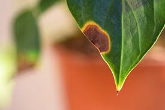

Plant Doctor
Common Plant Issues

Yellow Leaves
Cause: Overwatering or nutrient deficiency. Solution: Check watering schedule and fertilize weekly.

Brown Leaf Tips
Cause: Low humidity or too much fertilizer. Solution: Increase humidity and flush soil monthly.

Spotted Leaves
Cause: Fungal infection or pests. Solution: Remove affected leaves and treat with fungicide.